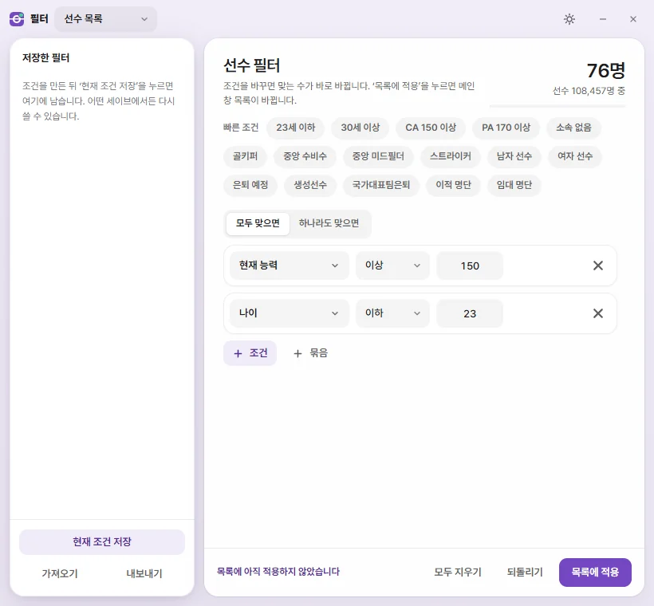
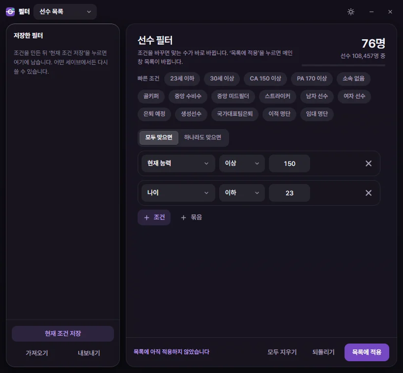
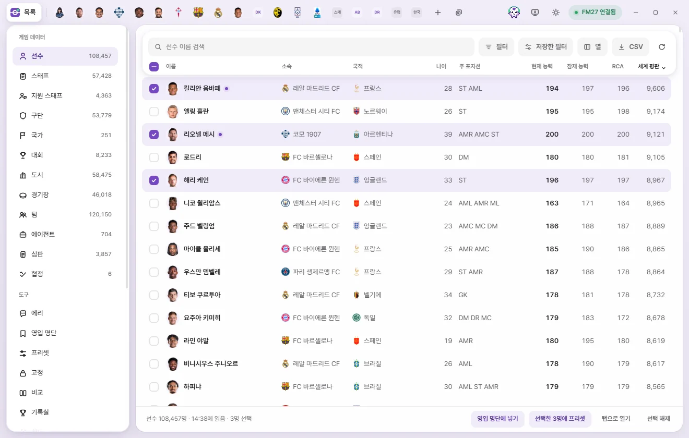

기본 사용법
목록 쓰기
선수·구단 같은 목록에서 찾고, 거르고, 정렬하고, 열을 고르고, CSV로 저장하고, 여러 개를 골라 한 번에 다루는 방법입니다.

목록 열기
왼쪽 사이드바의 '게임 데이터'에서 종류를 누르면 그 목록이 나옵니다. 종류 이름 옆 숫자는 게임에서 읽은 개수입니다.
FMLE는 게임에 연결되면 모든 목록을 처음 한 번 읽어 둡니다. 그동안 목록 위에 '선수 목록을 처음 한 번 읽는 중'이 뜹니다. 다 읽은 뒤에는 목록을 바꿔도 기다리지 않습니다. 나머지 값(목록에 아직 없는 열)은 뒤에서 이어서 읽어 두므로, 나중에 열을 더하거나 필터를 걸어도 금방 됩니다.
설정의 '게임에 연결되면 목록 바로 읽기'를 끄면, 목록을 열거나 다시 읽기를 누를 때 읽습니다.
도구의 '영입 명단' 화면도 이 페이지와 같은 목록입니다. 명단에 든 사람만 보이고, 열·정렬·필터를 선수·스태프 목록과 따로 기억합니다. 명단을 고르고 만드는 막대는 영입 명단에 있습니다.
목록 위 단추
| 단추 | 하는 일 |
|---|---|
| 검색창 | 이름으로 찾습니다. 검색 |
| 필터 | 필터 창을 새 창으로 엽니다. 조건이 있으면 단추에 조건 수가 붙습니다. Ctrl+Shift+F 필터 |
| 저장한 필터 | 저장해 둔 필터를 골라 바로 적용합니다. 저장한 필터 |
| 열 | 보일 열과 순서를 고릅니다. 열 고르기 |
| CSV | 지금 보이는 목록을 CSV 파일(엑셀)로 저장합니다. CSV로 저장 |
| 다시 읽기 (둥근 화살표) | 게임에서 모든 목록과 열린 탭을 다시 읽습니다. 다시 읽기 |
| ? 사용법 | 이 페이지를 엽니다. F1 |
검색
검색창에 이름 일부를 적으면 바로 걸러집니다. 대소문자와 악센트(é, ñ 등)는 가리지 않습니다. Ctrl+F를 누르면 검색창으로 갑니다.
이름 말고도 종류마다 아래 값으로 찾습니다.
| 목록 | 이름 말고 찾는 값 |
|---|---|
| 선수 | 소속, 국적 |
| 스태프 | 소속 구단, 국적, 전체 이름 |
| 지원 스태프 | 소속 구단, 국적, 고유번호 |
| 구단 | 짧은 이름, 국가, 연고 도시 |
| 팀 | 구단, 리그 |
| 국가 | 짧은 이름, 3글자 코드 |
| 도시 | 국가, 지역 |
| 대회 | 짧은 이름, 약칭, 국가 |
| 경기장 | 대륙 대회용 이름, 도시, 소유 구단 |
| 에이전트 | 국적, 활동 국가 |
| 심판 | 국적, 거주 도시 |
| 협정 | 짧은 이름 |
고유번호를 적어도 찾습니다. 생성선수의 r-12345처럼 앞에 r-가 붙어 있어도 됩니다.
검색은 필터와 함께 걸립니다. 검색어는 FMLE를 켜 둔 동안만 기억합니다.
정렬
열 이름을 누르면 그 열로 정렬합니다. 누를 때마다 바뀝니다.
- 첫 번째: 숫자 열은 큰 것부터, 글자 열은 가나다순.
- 두 번째: 반대 순서.
- 세 번째: 정렬을 풉니다.
정렬한 열 이름 옆에는 화살표가 붙습니다. 값이 없는 줄은 어느 순서든 맨 아래로 갑니다. 처음에는 목록마다 정해진 열(선수는 현재 능력, 구단은 평판 등)로 큰 것부터 정렬되어 있습니다.
열 고르기

'열'을 누르면 '보일 열' 창이 열립니다.
- 위·아래 화살표: 그 열을 한 칸 앞이나 뒤로 옮깁니다.
- ×: 그 열을 뺍니다. 이름 열은 뺄 수 없습니다(옮길 수는 있습니다).
- 열 추가: 칸 목록이 열립니다. 위의 '칸 이름 검색'에 적어서 찾거나, 묶음(자주 쓰는 값, 능력치 묶음, 기본 정보 등)에서 골라 누르면 맨 뒤에 더해집니다. ↑ ↓로 옮기고 Enter로 고를 수도 있습니다.
- 기본으로: 그 목록의 처음 열로 돌아갑니다.
'자주 쓰는 값' 묶음에는 FMLE가 계산하는 이름, 나이, 주 포지션, 추천 현재 능력(RCA), 능력치 효율 같은 값이 있습니다. 목록처럼 여러 줄로 된 값(부상 목록 등)은 열로 고를 수 없습니다.
고른 열과 순서, 정렬, 필터는 목록마다 따로 이 PC에 기억되어 FMLE를 다시 켜도 그대로입니다. 어느 세이브를 열어도 같습니다. 설정의 '설정 초기화'를 누르면 모든 목록의 열·정렬·필터가 처음으로 돌아갑니다.
필터
필터는 '현재 능력 150 이상', '소속 없음' 같은 조건으로 목록을 거릅니다. 필터 단추(또는 Ctrl+Shift+F)를 누르면 필터 창이 따로 열립니다.



필터 창의 구성
- 위쪽 막대: '필터' 제목, 어느 목록의 필터인지 고르는 칸('선수 목록' 등), 테마 단추, 최소화·닫기.
- 맞는 수: 오른쪽 위에 '120명 / 선수 108,457명 중'처럼 지금 조건에 맞는 수가 바로바로 나옵니다. 조건에 필요한 값을 아직 안 읽었으면 '게임에서 필요한 값을 읽는 중'이 잠깐 뜹니다.
- 빠른 조건: 눌러서 자주 쓰는 조건 하나를 바로 더합니다(아래 표).
- 선수의 관심: 선수 목록에만 있습니다(아래).
- 조건 칸: 조건을 만들고 고칩니다.
- 아래 단추: 모두 지우기, 되돌리기, 목록에 적용.
- 왼쪽 '저장한 필터': 저장해 둔 조건 목록과 '현재 조건 저장', '가져오기', '내보내기'.
필터 창에서 바꾼 조건은 목록에 적용을 눌러야 메인 창 목록이 바뀝니다. 그전까지 아래에 '목록에 아직 적용하지 않았습니다'가 보입니다.
조건 만들기
- + 조건을 누릅니다. 칸 목록이 열립니다.
- 거를 값(예: 현재 능력)을 찾아 고릅니다.
- 비교 방법(이상, 이하, 사이 …)을 고릅니다.
- 값을 적습니다. '사이'는 두 값을 적습니다.
- 조건을 더 넣으려면 1부터 되풀이합니다.
- 목록에 적용을 누릅니다. Ctrl+Enter나, 값 칸에서 Enter를 눌러도 적용됩니다.
조건 줄 맨 앞의 칸 이름을 누르면 다른 칸으로 바꾸고, 줄 끝 ×로 뺍니다. 값이 다 차지 않은 조건은 흐리게 보이고, 걸리지 않습니다.
능력치처럼 1~20으로 보이는 값은 게임 화면 숫자로 적습니다(칸 옆에 '게임 화면 숫자'). 금액은 설정에서 고른 통화로 적습니다(칸 옆에 '원 단위' 등). 통화를 바꿔도 조건의 뜻은 그대로입니다.
비교 방법은 값의 종류에 따라 다릅니다.
| 값의 종류 | 비교 방법 |
|---|---|
| 숫자 | 이상, 이하, 사이, 같음, 다름, 보다 큼, 보다 작음, 값 없음 |
| 글자·선택지 | 포함, 포함 안 함, 같음, 다름, 시작, 비어 있음, 비어 있지 않음 |
| 날짜 | 이후, 이전, 사이, 같은 날, 값 없음 |
글자 비교는 대소문자와 악센트를 가리지 않습니다. '예/아니요' 값과 정해진 선택지(성별, 구단 상태 등)는 목록에서 고릅니다.
모두 맞으면 · 하나라도 맞으면 · 묶음
조건이 두 개 이상이면 위에 모두 맞으면 / 하나라도 맞으면이 생깁니다. 모두 맞으면은 모든 조건에 맞는 줄만, 하나라도 맞으면은 조건 중 하나에만 맞아도 남깁니다.
+ 묶음은 조건 묶음을 안에 넣습니다. 예를 들어 '23세 이하' 그리고 '(골키퍼 하나라도 맞으면 중앙 수비수)'처럼 섞어 쓸 수 있습니다. 묶음 안에 묶음을 한 번 더 넣을 수 있습니다. 묶음은 휴지통 단추로 뺍니다.
빠른 조건
| 목록 | 빠른 조건 |
|---|---|
| 선수 | 23세 이하, 30세 이상, CA 150 이상, PA 170 이상, 소속 없음, 골키퍼, 중앙 수비수, 중앙 미드필더, 스트라이커, 남자 선수, 여자 선수, 은퇴 예정, 생성선수, 국가대표팀은퇴, 이적 명단, 임대 명단 |
| 스태프 | 감독, CA 150 이상, PA 170 이상, 소속 없음, 40세 이하, 여성, 은퇴 예정 |
| 구단 | 평판 7,000 이상, 잔고가 마이너스, 이적 예산 있음, 훈련 시설 15 이상, 프로 구단, 아마추어 구단, 여자 구단, 이적 금지 중 |
| 대회 | 평판 100 이상, 최상위 리그, 여자 대회 |
| 경기장 | 5만 명 이상 |
| 심판 | 엘리트 심판진, CA 150 이상, 여성 심판 |
| 도시 | 매력도 15 이상 |
포지션 빠른 조건(골키퍼 등)은 그 포지션 숙련도가 15 이상인 사람입니다.
선수의 관심
선수 목록의 필터 창에만 있습니다. 게임의 스카우트 검색처럼, 선수가 내 구단으로 오는 데 얼마나 관심이 있는지로 거릅니다.
- 왼쪽 칸: 이적 혹은 임대, 이적만, 임대만, 고려 대상 아님(조건 없음).
- 오른쪽 칸: 관심 있음, 설득 가능(이상), 불확실(이상).
이 조건은 FMLE가 게임에 직접 묻습니다. 목록에 적용하면 다른 조건에 맞는 줄 가운데 목록 순서로 앞쪽 600명에게만 묻습니다. 묻는 동안 목록 위 조건 칩에 '게임에 묻는 중 120/600'이 나오고, 600명보다 많으면 '앞 600명만 물었습니다'가 붙습니다. 답은 그 게임 날짜 동안 기억합니다. 필터 창의 맞는 수에는 이 조건이 들어가지 않습니다.
내 구단을 찾지 못하거나 게임이 다른 일을 하는 중이면 칩에 '게임에 묻지 못했습니다'와 이유가 나옵니다. 이유가 '게임이 다른 호출을 처리하는 중'이면 필터를 다시 적용해 주세요.
아래 단추
| 단추 | 하는 일 |
|---|---|
| 모두 지우기 | 필터 창의 조건을 모두 지웁니다. 목록에 적용해야 목록도 바뀝니다. |
| 되돌리기 | 지금 목록에 적용된 조건으로 돌아갑니다. |
| 목록에 적용 | 조건을 메인 창 목록에 겁니다. Ctrl+Enter |
적용하지 않은 조건이 있을 때 필터 창을 닫거나 다른 목록으로 바꾸면 조건이 사라진다고 한 번 묻습니다.
메인 창에서 다른 목록으로 가면 필터 창도 그 목록의 필터로 바뀝니다. 필터 창에서 목록을 바꾸면 메인 창도 그 목록으로 바뀝니다.
필터 창의 저장한 필터
- 현재 조건 저장: 조건에 이름을 붙여 저장합니다. 저장한 필터는 어느 세이브에서든 쓸 수 있습니다.
- 저장한 필터를 누르면 그 조건을 불러옵니다. 아직 목록에는 걸리지 않으니 '목록에 적용'을 누르세요.
- 연필 단추는 이름 바꾸기, 휴지통 단추는 삭제입니다. 삭제해도 목록에 적용된 조건은 남습니다.
- 내보내기: 저장한 필터를 모두 JSON 파일로 다운로드 폴더에 저장합니다. 다른 사람에게 줄 수 있습니다.
- 가져오기: FMLE에서 내보낸 필터 파일을 골라 더합니다. 이 게임 버전에서 쓸 수 없는 조건은 빼고 가져옵니다.
목록 위의 조건 칩

필터를 적용하면 목록 위에 '모두 맞으면'(또는 '하나라도 맞으면')과 조건마다 칩이 나옵니다. 묶음은 '묶음 · 조건 2개 (하나라도)'처럼 보입니다.
- 칩의 ×: 그 조건만 바로 뺍니다.
- 필터 편집: 필터 창을 엽니다.
- 모두 지우기: 모든 조건을 바로 풉니다.
저장한 필터
목록 위 저장한 필터를 누르면 이 목록 종류의 저장한 필터가 나옵니다. 하나를 누르면 바로 목록에 적용됩니다. 아래의 필터 창 열기 단추는 필터 창을 엽니다. 아직 저장한 필터가 없으면 그 안내가 나옵니다. 필터를 저장하고 지우는 일은 필터 창에서 합니다.
CSV로 저장
CSV를 누르면 지금 보이는 목록을 CSV 파일로 다운로드 폴더에 저장합니다. 엑셀에서 열 수 있습니다.
- 검색, 필터, 정렬, 고른 열이 화면 그대로 들어갑니다.
- 줄을 골라 두었으면 고른 줄만 저장합니다.
- 첫 열에는 고유번호가 들어갑니다.
- 숫자는 엑셀에서 정렬할 수 있게 쉼표 없이 들어갑니다. 금액은 고른 통화의 정수로, 열 이름에 '(원)'처럼 통화가 붙습니다.
- 파일 이름은
fmle-player-20261107-1438.csv처럼 목록 이름과 저장한 날짜·시각입니다.
저장하면 알림에 폴더에서 보기 단추가 붙습니다. 목록을 아직 게임에서 읽지 않았으면 '아직 CSV로 저장할 수 없습니다'라고 알립니다.
여러 개 고르기


줄 맨 왼쪽의 체크 칸으로 여러 줄을 고릅니다.
| 하는 방법 | 결과 |
|---|---|
| 체크 칸 누르기 | 그 줄을 고르거나 풉니다. |
| Ctrl을 누른 채 줄 누르기 | 탭을 열지 않고 그 줄을 고르거나 풉니다. |
| Shift를 누른 채 줄이나 체크 칸 누르기 | 마지막으로 누른 줄부터 여기까지 모두 고릅니다. |
| 열 이름 줄 맨 왼쪽 칸 | 지금 검색·필터로 보이는 줄을 모두 고릅니다. 모두 골라져 있으면 모두 풉니다. |
| Ctrl+A | 위와 같습니다(검색창에 글을 적는 중이 아닐 때). |
| Space | 키보드로 옮겨 다니는 중인 줄을 고르거나 풉니다. |
| Esc | 고른 것을 모두 풉니다. |
골라 두면 아래쪽 막대에 '· 3명 선택'이 붙고 오른쪽에 단추가 생깁니다.
| 단추 | 하는 일 | 게임에 쓰는 때 |
|---|---|---|
| 명단에서 빼기 | 영입 명단 화면에서만 보입니다. 지금 명단에서 고른 사람을 뺍니다. | 게임에 쓰지 않습니다. |
| 영입 명단에 넣기 | 선수·스태프 목록에서만 보입니다. 넣을 명단을 고르거나 '새 명단을 만들어 넣기'를 누릅니다. 영입 명단 | 게임에 쓰지 않습니다. |
| 선택한 3명에 프리셋 | 프리셋을 골라 고른 줄 모두에 적용합니다. 프리셋 | 확인하면 바로 씁니다. |
| 선택 고정 | 고정 화면에서 고른 값을 지금 게임 값으로 모두 고정합니다. 고정 화면에서 값을 골라 두었을 때만 보입니다. 고정 | 고정은 FMLE가 켜져 있는 동안 지킵니다. |
| 탭으로 열기 | 고른 줄을 모두 탭으로 엽니다. 20개 이하일 때만 보입니다. | — |
| 선택 해제 | 고른 것을 모두 풉니다. | — |
아무것도 고르지 않았어도 검색이나 필터로 줄을 줄였으면 결과 120명에 프리셋 단추가 나옵니다. 걸러진 줄 모두에 프리셋을 적용합니다.
고른 줄에서 오른쪽 클릭하면 고른 것 모두에 쓸 수 있는 메뉴가 나옵니다(탭과 빠른 열기·오른쪽 클릭 메뉴).
고른 것은 목록마다 따로, FMLE를 켜 둔 동안만 기억합니다.
줄 누르기와 키보드
- 줄을 누르면 그 대상의 편집 탭이 열립니다. 이미 열려 있으면 그 탭으로 갑니다.
- 소속·국적처럼 다른 대상의 이름은 누르면 그 대상(구단, 국가 등)의 탭이 열립니다. Shift나 Ctrl을 누른 채 누르면 탭을 열지 않고 줄을 고릅니다.
- 목록을 한 번 누른 뒤에는 키보드로 다룰 수 있습니다.
| 키 | 하는 일 |
|---|---|
| ↑ ↓ | 한 줄씩 옮깁니다. |
| PageUp PageDown | 한 화면씩 옮깁니다. |
| Home End | 맨 위, 맨 아래로 갑니다. |
| Enter | 그 줄의 탭을 엽니다. |
| Space | 그 줄을 고르거나 풉니다. |
| Esc | 고른 것을 모두 풉니다. |
| 메뉴 키 또는 Shift+F10 | 그 줄의 오른쪽 클릭 메뉴를 엽니다. |
이름 옆 표시
| 표시 | 뜻 |
|---|---|
| 얼굴·로고 | 그래픽 팩에 그 사람의 얼굴이나 구단·국가·대회 로고가 있으면 보입니다. 없으면 이름 머리글자입니다. 그래픽 팩 |
| 보라색 점 | 그 대상의 탭이 열려 있습니다. |
| 별 | 즐겨찾기에 넣은 대상입니다. |
| 자물쇠 | 고정한 값이 있습니다. 고정 |
| 책갈피 | 영입 명단에 들어 있습니다. 마우스를 올리면 어느 명단인지 나옵니다(영입 명단 화면 안에서는 나오지 않습니다). |
| 다른 색 이름 | 여자 구단과 그 팀입니다. |
다시 읽기
목록 위 둥근 화살표(게임에서 다시 읽기)를 누르면 모든 종류의 목록을 게임에서 처음부터 다시 읽고, 열린 탭도 모두 다시 읽습니다. 게임에서 날짜를 진행했거나 게임 안에서 값을 바꾼 뒤 FMLE 목록을 맞출 때 씁니다. 연결 상태 창의 '게임에서 다시 읽기'와 같습니다.
게임에서 세이브를 다시 불러오거나 다른 세이브를 열면 FMLE가 알아서 다시 읽습니다.
아래쪽 막대의 '14:38에 읽음'은 그 목록을 마지막으로 읽은 시각입니다. 게임은 계속 바뀌므로, 오래된 목록의 값은 지금 게임과 다를 수 있습니다. 편집 탭은 새로 열 때마다 그 대상을 게임에서 새로 읽습니다.
목록이 비어 있을 때
| 안내 | 할 일 |
|---|---|
| 조건에 맞는 항목이 없습니다 | 검색어나 필터를 바꿔 보세요. |
| 세이브를 아직 불러오지 않았습니다 | 게임에서 세이브를 불러오면 자동으로 읽습니다. |
| FM27이 꺼져 있습니다 등 | 연결 문제입니다. 다시 확인 단추가 나옵니다. 화면 둘러보기 |
| 목록을 읽지 못했습니다 | 다시 읽기 단추를 누르세요. |
| 게임에 연결하지 않은 화면입니다 | FMLE 앱이 아니라 브라우저로 연 화면입니다. |